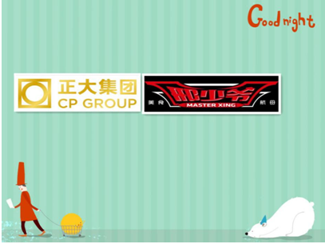

邢少爷再讲“春天的故事” 与正大集团达成战略合作意向
来源：创业邦
邢少爷最近实在是有点“火”，“春天的故事”也特别多。一周前，邢少爷品牌刚刚传出准备启动Pre-A轮融资的消息，近日又有消息传来，邢少爷品牌的拥有者——雅聪（上海）餐饮管理有限公司的当家人邢志远专程飞赴北京，拜会知名跨国企业正大集团，并与其副董事长于建平商谈建立战略合作事宜。据悉，双方已基本达成一致意向，将在食品安全、供应链、产品研发等方面展开深入合作，共同打造安全、高效、优质的爆款美食连锁店生态。
食品安全上双保险
据了解，此次邢少爷与正大集团达成战略合作的基础首先建立在双方对食品安全管控的重视上。在刚刚过去的中央电视台3.15晚会上，“饿了么”外卖平台的食物供应链问题被曝光,一石激起千层浪，整个行业面临严峻的安全质量和商业诚信的考验。
邢少爷旗舰店虽然4月8日才开业，但从一开始就以最严格的管理标准来保证食品安全。随着邢少爷品牌1+N的市场扩张模式的逐渐开放，即每一个地区以一家直营航母旗舰店带动周边N家中型品牌护卫店这一战略模式的启动，如何保证整个供应链高效顺畅和食品安全，成为邢少爷必须主动考虑的问题。而正大集团在食品业有着优良的历史和市场口碑，于副董事长甚至自豪地表示，正大企业进入中国30年，在食品安全方面30年历史清白，双方的社会责任感使得合作有了基础。这一合作可以理解为，邢少爷的食品安全首先得到了正大集团的背书，再加上其管理团队对各门店在食品安全方面高标准的日常监管，为所有旗下产品的安全卫生上了一道切实的双保险。
标准化提效率降成本
邢少爷与正大集团达成战略合作，将改变传统餐饮作坊式的随意操作，转而实现标准化工艺流程，不仅保证食品安全，还能为门店提高效率、降低成本。邢志远表示，邢少爷门店目前生意火爆，而所有产品都依赖后厨加工完成，效率有限。加之外卖业务也即将上线，这势必让后厨产能更加捉襟见肘。与正大集团的合作，通过标准化工艺，标准化装备，以及标准化供应链输出把那些适合做外卖的部分单品爆款交由他们来加工完成，这样就能轻松释放产能，快速满足消费者对于爆款美食的强烈需求。未来邢少爷旗下门店的部分产品将由正大集团统一标准配送，这将很好地解决连锁体系下匹配供应的效率，大幅降低旗下门店的各类成本。
简单地说，与正大集团的深入合作，使得邢少爷爆款美食航母拥有了自己的“导弹库”——“中央厨房”，不同品牌的产品可以实现同时生产，产品品质也将得到有效把控。相比之前传统餐饮作坊式的操作，未来基于中央厨房体系生产的产品也一定更受欢迎，并且更加令人放心，互联网+时代的个性化产品定制也将成为可能。
研发爆款成决胜关键
餐饮行业的产品迭代是保持门店生意火爆的重要因素。邢少爷管理团队对此有深刻的认识和清醒的意识。他们认为，要保持整个品牌的活力和高人气，必须不断研发爆款美食，并且要在速度上超越市场预期，才能有效满足日益挑剔的食客的胃口。鉴于此，邢少爷品牌在门店开张之初就建立了自己的爆款美食研发中心。而此次与正大集团达成战略合作，正大集团拥有的超过200人的食品研发中心团队也是邢少爷尤其看重的与其合作的原因。
邢志远表示，正大集团的食品研发中心力量雄厚，而邢少爷产品研发中心团队处于市场一线，对当季和未来产品走向，以及食客喜好有着深刻的理解和认识。两支团队优势互补，无缝对接，就能够以最快的速度实现爆款美食的更新迭代。简单说，市场需要什么样的产品，邢少爷内部美食研发中心将联合正大集团食品研发中心“博士研发团”以最快的速度研发出来并推向市场，实现互联网+时代的定制任务。这一模式将大大提升邢少爷品牌爆款美食迭代的速度，从而更好地满足消费者的需求，始终保持所有门店的生机与活力。
邢少爷＆正大集团
这是一个恋爱的季节，春雨萌动，诉说缠绵。空气里，都是情侣的味道。孤独的人……是可耻的！所以，邢少爷在这样的一个季节，与著名的跨国企业——正大集团“牵手”了。

邢少爷作为一个新生品牌，店面开业至今不过月余，但其火爆的程度很快就引起资本的极大关注。此前传出的消息已经令投资界和餐饮界为之侧目：3月初获得由雪冰中国邢志远、旻月科技马如宝、法泰中国徐如根、慕槿投资倪惠霖联合投资的1000万元天使资金；4月初位于上海临空商务区凌空SOHO的第一间旗舰门店正式对外营业；4月中下旬，准备启动Pre-A轮融资的消息传出，品牌估值达了8000万；近日又与正大集团达成战略合作意向，其品牌和市场推进速度颇有些令人眼花缭乱。
乱花渐欲迷人眼，浅草才能没马蹄。是的，这正是春天的感觉。
正大集团是世界上最大的华人跨国公司之一，由华裔实业家谢易初、谢少飞兄弟于1921年在泰国曼谷创办。集团在中国投资额近60亿美元，设立企业213家，遍及除青海、西藏以外的所有省、市、自治区，员工人数超过80000人，年销售额超过500亿元人民币。经过80多年的发展，正大集团形成了以农牧业、食品业、商业零售业为核心，制药、机车、房地产、国际贸易、金融、传媒等领域共同发展的业务格局。1994年以来，在由世界著名财经杂志《远东经济评论》评选的“亚洲200领先企业”中，正大集团6次位居泰国企业之榜首。作为知名跨国企业，正大集团在中国以外称作卜蜂集团（Charoen Pokphand Group），业务遍及20多个国家和地区，下属400多家公司，员工人数近20万人。